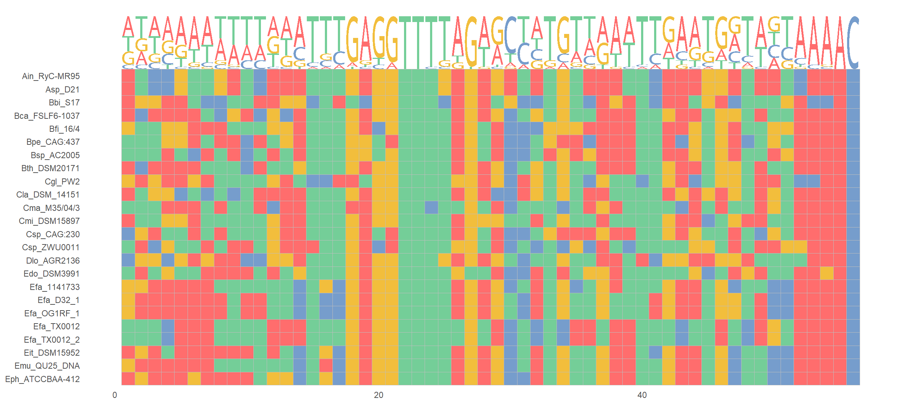
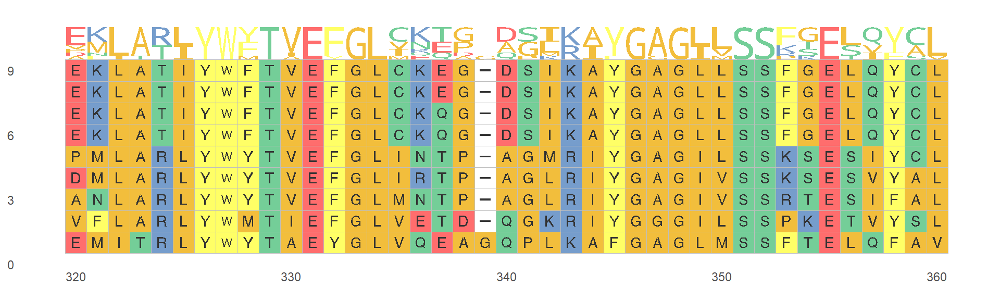
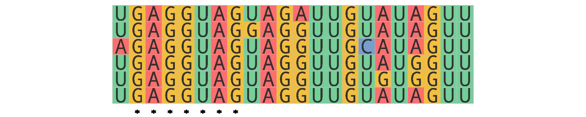
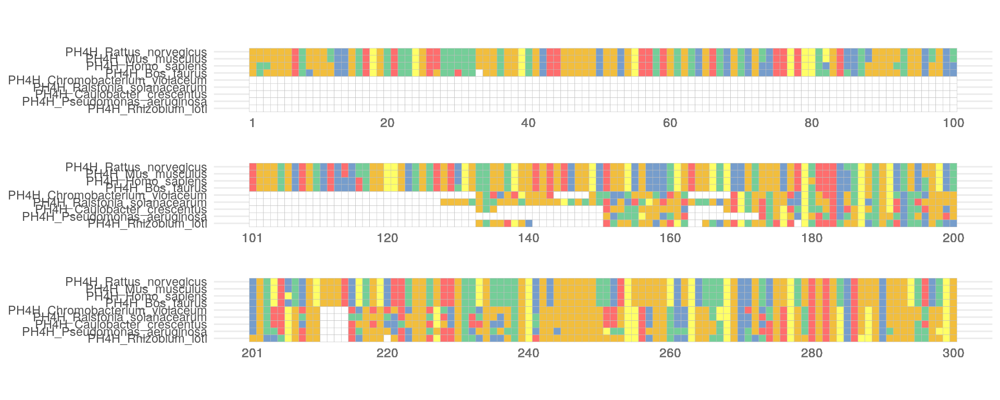
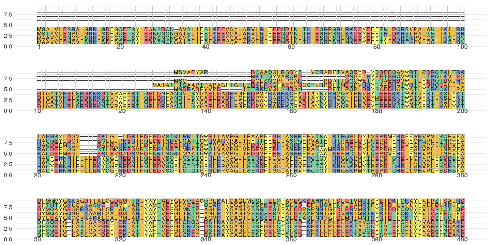
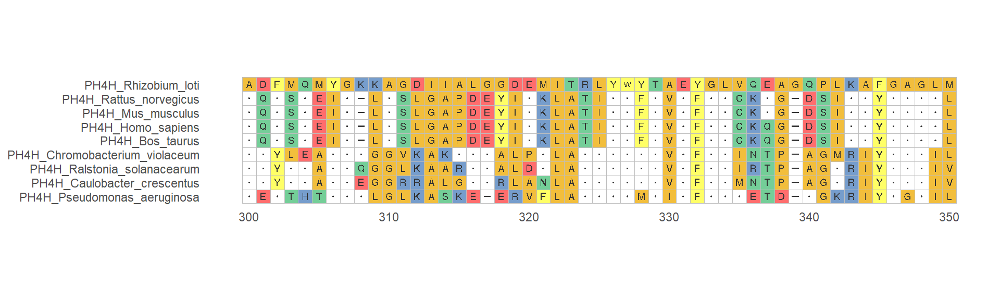
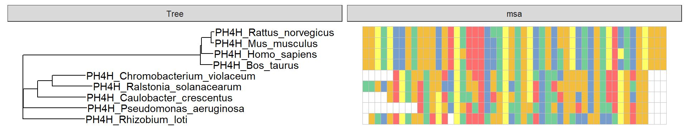
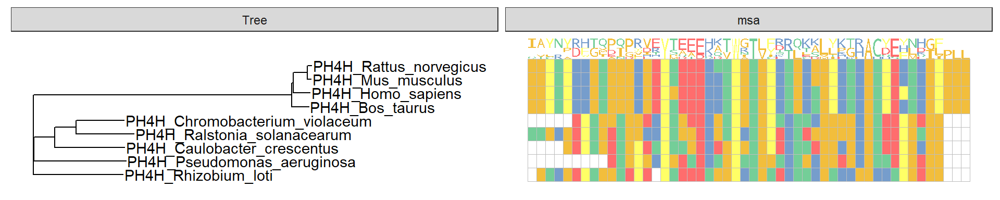
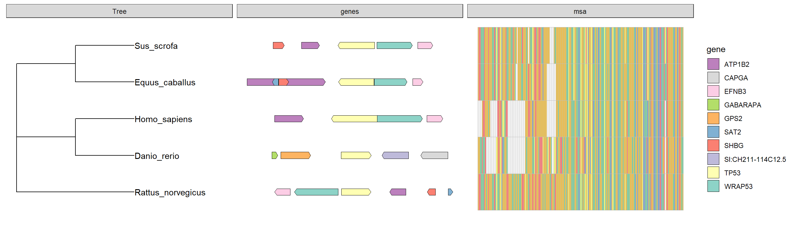

extensions.Rmdggmsa supports several common functional annotations for MSA. Similar to the ggplot2, we modularize the annotation functionality and users can perform them with +.
loading sample data as following:
protein_sequences <- system.file("extdata", "sample.fasta", package = "ggmsa") miRNA_sequences <- system.file("extdata", "seedSample.fa", package = "ggmsa") nt_sequences <- system.file("extdata", "LeaderRepeat_All.fa", package = "ggmsa") tp53_sequences <- system.file("extdata", "tp53.fa", package = "ggmsa") tp53_genes <- system.file("extdata", "TP53_genes.xlsx", package = "ggmsa")
geom_seqlogo()
Visualizing multiple sequence alignment with sequence logo.
ggmsa(nt_sequences, font = NULL, color = "Chemistry_NT" ) + geom_seqlogo()

ggmsa(protein_sequences, start = 320, end = 360, char_width = 0.5, color = "Chemistry_AA") + geom_seqlogo(color = "Chemistry_AA")

geom_seed()
We provide two methods for highlighting seed sequences.
ggmsa(miRNA_sequences, font = 'DroidSansMono', none_bg = TRUE) + geom_seed(seed = "GAGGUAG") + theme_void()
ggmsa(miRNA_sequences, font = 'DroidSansMono', color = "Chemistry_NT") + geom_seed(seed = "GAGGUAG", star = TRUE) + theme_void()

geom_msaBar()
ggmsa(protein_sequences, 221, 280, font = NULL, seq_name = TRUE) + geom_msaBar()

Using consensus_views option to executes Consensus View. We provide four parameters——use_dot,disagreement, ignore_gaps and ref to adjust how the Conesen View executes.
use_dot: a logical value. Displays characters as dots instead of fading their color in the consensus view.disagreement: a logical value. Displays characters that disagreememt to consensus(excludes ambiguous disagreements).ignore_gaps: a logical value. When selected TRUE, gaps in column are treated as if that row didn’t exist.ref: a character string. Specifying the reference sequence which should be one of input sequences.ggmsa(protein_sequences, 300, 350, char_width = 0.5, seq_name = T, consensus_views = T, use_dot = T)

ggmsa(protein_sequences, 300, 350, char_width = 0.5, seq_name = T, consensus_views = T ,use_dot = T, ref = "PH4H_Rhizobium_loti")

#MSA + tree library(Biostrings) x <- readAAStringSet(protein_sequences) d <- as.dist(stringDist(x, method = "hamming")/width(x)[1]) library(ape) tree <- bionj(d) library(ggtree) p <- ggtree(tree ) + geom_tiplab() data <- tidy_msa(x, 164, 213) p + geom_facet(geom = geom_msa, data = data, panel = 'msa', font = NULL, color = "Chemistry_AA") + xlim_tree(1)

#MSA + sequence logo + tree library(Biostrings) x <- readAAStringSet(protein_sequences) d <- as.dist(stringDist(x, method = "hamming")/width(x)[1]) library(ape) tree <- bionj(d) library(ggtree) p <- ggtree(tree ) + geom_tiplab() data <- tidy_msa(x, 164, 213) p + geom_facet(geom = geom_msa, data = data, panel = 'msa', font = NULL, color = "Chemistry_AA") + geom_facet(geom = ggmsa:::geom_logo, data = data, panel = "msa", font = "DroidSansMono", color = "Chemistry_AA",adaptive = T) + xlim_tree(1)

library(Biostrings) library(ape) library(ggtree) library(gggenes) library(ggnewscale) library(RColorBrewer) #tree tp53 <- readAAStringSet(tp53_sequences) d <- as.dist(stringDist(tp53, method = "hamming")/width(tp53)[1]) tree <- bionj(d) p_tp53 <- ggtree(tree, branch.length = 'none') + geom_tiplab() #msa data_53 <- tidy_msa(tp53, start = 0, end = 200) #genes TP53_arrow <- readxl::read_xlsx(tp53_genes) TP53_arrow$direction <- 1 TP53_arrow[TP53_arrow$strand == "reverse","direction"] <- -1 #color mapping = aes(xmin = start, xmax = end, fill = gene, forward = direction) my_pal <- colorRampPalette(rev(brewer.pal(n = 10, name = "Set3"))) #tree + genes + msa p_tp53 + geom_facet(geom = geom_motif, mapping = mapping, data = TP53_arrow, panel = 'genes', on = 'TP53', arrowhead_height = unit(3, "mm"), arrowhead_width = unit(1, "mm")) + scale_fill_manual(values = my_pal(10)) + new_scale_fill() + geom_facet(geom = geom_msa, data = data_53, panel = 'msa', font = NULL, color = "Chemistry_AA") + xlim_tree(3.5)
